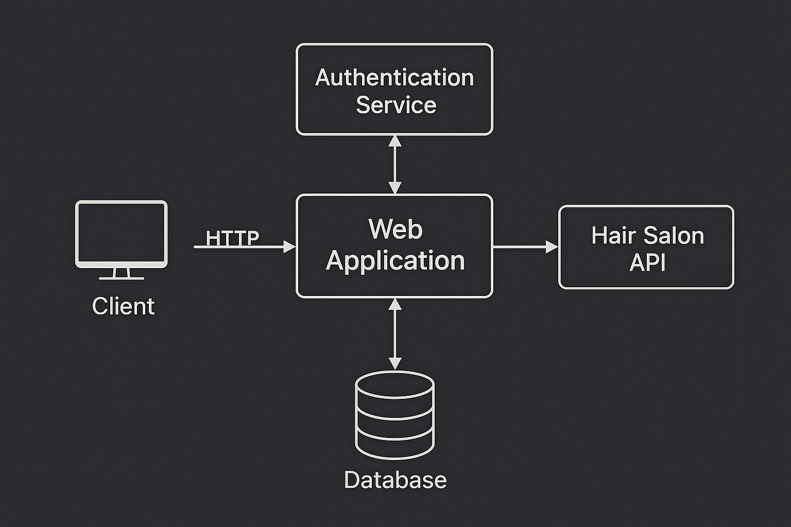

Architektúra és komponensek a fodrász szalon időpontfoglaló rendszeréhez.
Projekt: IdőMester ·
Technológia: Python alapú webes rendszer ·
Készítette: Kóró Marcell József
1. Cél
A rendszerterv célja, hogy a H3–H4 analízis modell alapján technikai
szinten meghatározza az IdőMester rendszer felépítését: architektúrát,
fő komponenseket, rétegezést, valamint a külső interfészeket (REST API).
2. Architektúra áttekintés
A rendszer egy egyszerű kliens–szerver architektúrát követ:
Frontend: HTML/CSS/JavaScript alapú webes felület, GitHub Pages-ről vagy web szerverről kiszolgálva.
Backend API: Python (FastAPI vagy Flask) REST végpontokkal.
Adatbázis: fejlesztéskor SQLite, későbbi fázisban PostgreSQL-re váltható.
2.1 Architektúra diagram
Az alábbi diagram a kliens–szerver felépítést és a fontosabb komponenseket mutatja be:

3. Fő komponensek
3.1 Foglaláskezelő szolgáltatás
Új foglalás létrehozása (vendég + stylist + szolgáltatás + időintervallum).
Foglalás lemondása / módosítása szabályok szerint.
Ütközéskezelés (stylisten belüli átfedő foglalások tiltása).
Nyitvatartás és speciális idősávok (szabadság, zárva napok).
3.3 Naptár- és nézetkezelő
Admin és stylist napi / heti naptár nézet.
Lekérdezések dátum, stylist és státusz szerint.
4. Rétegezés
Prezentációs réteg: HTML oldalak, melyek az API-t hívják (fetch / Axios segítségével).
Alkalmazás logika réteg: Python service réteg, amely a domain szabályokat valósítja meg (foglalási logika, ütközéskezelés).
Adatelérési réteg: repository / ORM réteg (pl. SQLAlchemy), amely az adatbázis műveleteket kezeli.
5. Fő REST végpontok
5.1 Szolgáltatások
GET /services – elérhető szolgáltatások listája.
POST /services – új szolgáltatás létrehozása (admin).
PUT /services/{id} – meglévő szolgáltatás módosítása.
5.2 Stylistok
GET /stylists – stylistok listázása.
GET /stylists/{id}/schedule – adott stylist napi/heti beosztása.
5.3 Foglalások
GET /appointments?day=YYYY-MM-DD – foglalások lekérdezése adott napra.
POST /appointments – új foglalás létrehozása.
DELETE /appointments/{id} – foglalás lemondása.
6. Nem funkcionális követelmények megvalósítása
6.1 Teljesítmény
Egyszerű cache-elés a napi naptár lekérdezésére.
Indexek az adatbázisban a dátum és stylist mezőkön.
6.2 Biztonság
Jelszavak sózott-hash-elt tárolása.
Bemenet validálás minden végpontnál.
Jogosultság-kezelés (admin vs. nyilvános végpontok).
6.3 Karbantarthatóság
Rétegzett architektúra, tiszta függőségi irányok.
Egység- és integrációs tesztek a fő szolgáltatásokra.
Konfiguráció külön fájlokban (nyitvatartás, e-mail beállítások, stb.).
7. Összegzés
A rendszerterv rögzíti az IdőMester időpontfoglaló rendszer technikai alapjait.
Az itt bemutatott architektúra és komponensek szorosan illeszkednek a H4
analízis modellhez, és stabil alapot adnak a prototípus implementálásához
és a későbbi bővítésekhez.